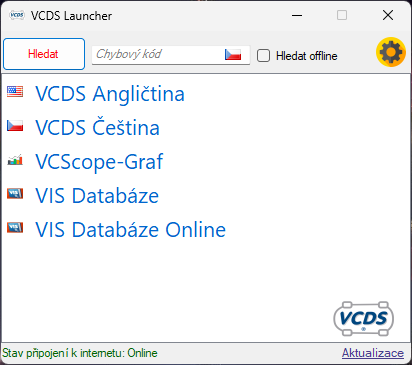
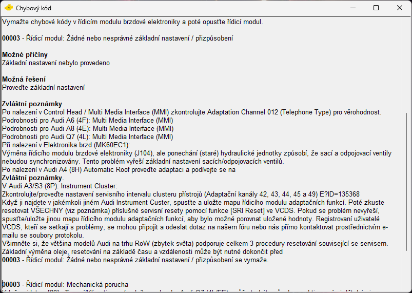

Download
AutoDiagnostika
Aktuální balíček aplikace pro rychlejší práci s diagnostickými soubory, chybovými kódy a aktualizacemi.
Stáhnout aktuální verzi
ZIP archiv aplikace je připravený v sekci releases.
Novinky v poslední verzi
Bezpečnost: Po stažení doporučujeme ověřit kontrolní hash a spouštět aplikaci pouze ze známého umístění.

